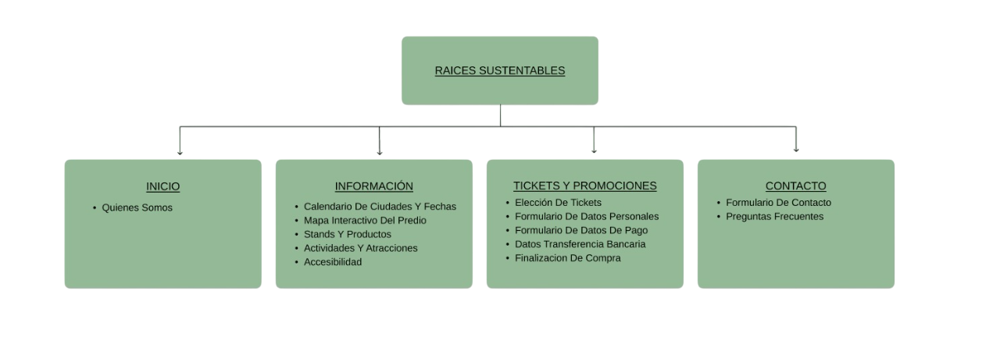

Avances del Proyecto
Raices Sustentables
"Más que una feria, una experiencia verde para descubrir, compartir y construir juntos un futuro más sustentable"
Introducción
Este proyecto busca desarrollar un sitio web para una organización dedicada a la promoción de la sustentabilidad ambiental. Nuestra propuesta se centra en crear una plataforma clara y atractiva que informe, eduque y motive a la comunidad a participar activamente.
Actividad principal
La organización trabaja en campañas de concientización ambiental, promoción de prácticas ecológicas y colaboración con instituciones educativas y comunitarias.
Objetivos del sitio web
- Difundir información ambiental relevante y actualizada.
- Facilitar la participación ciudadana en proyectos y eventos.
- Crear una comunidad virtual comprometida con el cuidado del planeta.
Concepto general y estrategias de atracción
El sitio tiene un diseño fresco y natural, que transmite confianza y cercanía. Se usarán imágenes atractivas, contenidos dinámicos y llamadas a la acción claras para captar y mantener el interés del público.
Análisis del público objetivo
- Edad: Jóvenes y adultos de 18 a 40 años.
- Intereses: Medio ambiente, tecnología sostenible, educación ambiental.
- Hábitos: Uso frecuente de redes sociales, interés por eventos comunitarios y contenido multimedia.
Identidad visual inicial
- Paleta de colores:
#4a8f4e#81C784#333333#f4f9f4
- Tipografía: Arial, sans-serif, clara y accesible.
- Iconografía y estilo gráfico: minimalista, con íconos relacionados a la naturaleza y sustentabilidad.
- Logo: versión preliminar basada en un árbol estilizado que simboliza crecimiento y vida.
-

-
Favicon:

Mapa del sitio
Se plantea un esquema con secciones principales: Inicio, Información, Tickets y Promociones, y Contacto.
Prototipo
Wireframes básicos diseñados en Figma con enlaces para revisión y comentarios.
Prototipo en FigmaOrganización del equipo
- Diseñador UX/UI: Desarrollo del prototipo visual y experiencia de usuario.
- Maquetador: Implementación HTML/CSS y estructura del sitio.
- Programador: Desarrollo de funcionalidades dinámicas y backend.
- Comunicador Web: Creación de contenidos y gestión de redes sociales.